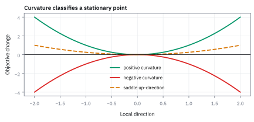
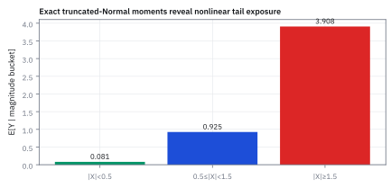

8.3 Zero Covariance ≠ Independence
covariance เป็นศูนย์แปลว่าความสัมพันธ์เชิงเส้นหายไป ไม่ได้แปลว่าตัวแปรหนึ่งไม่มีข้อมูลเกี่ยวกับอีกตัว
ระบบความเสี่ยงรายงานว่า book หนึ่งมี correlation กับตลาดเป็นศูนย์พอดี ผู้จัดการจึงจัดให้มันเป็น “ความเสี่ยงที่ไม่ขึ้นกับตลาด” แต่ book นี้มีกำไรขาดทุนสมมติ $\Pi=1000(1-X^2)$ ดอลลาร์ เมื่อ $X$ คือ shock ของตลาดแบบ standard Normal พอตลาดขึ้น 2 SD หรือลง 2 SD book ขาดทุน \$3,000 เท่ากันทั้งสองทาง รายงานผิด หรือการตีความผิด
ลองตอบก่อนเปิดเฉลย
รายงานถูก การตีความผิด covariance ระหว่าง $X$ กับ $\Pi$ เป็นศูนย์จริง เพราะวันตลาดขึ้นกับวันตลาดลงหักล้างกันในผลคูณ แต่ขนาดของ shock กำหนดกำไรขาดทุนได้แน่นอน book นี้ขาดทุนทุกวันที่ $|X|\gt1$ ซึ่งเกิด 31.73% ของวัน และมี SD ประมาณ \$1,414 รูปร่างนี้คล้าย book ที่ขาย option ทั้งสองฝั่งแล้ว hedge delta ไว้ ความเสี่ยงอยู่ที่ขนาดการเคลื่อนไหว ไม่ใช่ทิศทาง ตัวเลขเป็น payoff สมมติเพื่อแยกกลไก ไม่ใช่สูตรของ option จริง
ภาพรวมก่อนลงสูตร
covariance ตอบคำถามเดียว: ค่าเฉลี่ยของผลคูณการเบี่ยงเป็นเท่าไร ถ้าความสัมพันธ์เป็นเส้นตรง ผลคูณจะเอนไปทางเดียวและ covariance จับได้ แต่ถ้าความสัมพันธ์เป็นรูปตัว U ฝั่งซ้ายกับฝั่งขวาของตัว U ให้ผลคูณเครื่องหมายตรงข้ามกัน และอาจหักล้างกันจนเหลือศูนย์พอดี
independence ถามคำถามที่ใหญ่กว่ามาก: รู้ค่าของตัวหนึ่งแล้ว distribution ของอีกตัวเปลี่ยนไหม คำตอบ “ไม่เปลี่ยน” ต้องจริงกับทุกเหตุการณ์และทุกฟังก์ชัน ไม่ใช่แค่ผ่านการตรวจผลคูณครั้งเดียว ทิศทางหนึ่งจึงใช้ได้เสมอ (อิสระแล้ว covariance เป็นศูนย์) แต่ย้อนกลับไม่ได้ทั่วไป
หน้านี้จะเห็นเรื่องนี้ในตัวอย่างห้าค่าที่นับมือได้ ใน Normal ต่อเนื่อง และในคู่ที่ marginal เป็น Normal ทั้งคู่แต่ไม่ได้ jointly Normal แล้วดูว่าเมื่อไร covariance ศูนย์จึงสรุป independence ได้จริง ก่อนกลับไปวัดความเสี่ยงของ book ในคำถามเปิด
รูป — ห้าจุดบนตัว U ที่ covariance เป็นศูนย์พอดี
ศัพท์ที่ใช้ในหัวข้อนี้
- Uncorrelated
- มี covariance เป็นศูนย์ ถ้า variance ของทั้งคู่เป็นบวกและมีค่าจำกัด ก็คือ correlation เป็นศูนย์ บอกว่าไม่มีความสัมพันธ์เชิงเส้นโดยเฉลี่ย
- Independent
- รู้ค่าของตัวหนึ่งแล้ว distribution ของอีกตัวไม่เปลี่ยน เทียบเท่ากับ joint CDF เท่ากับผลคูณของ marginal CDF ทุกค่า ใช้เมื่อต้องการคูณ probability ของเหตุการณ์ร่วม
- Conditional mean $\mathbb E[Y\mid X]$
- ค่าเฉลี่ยของ $Y$ เมื่อรู้ $X$ เป็นฟังก์ชันของ $X$ ใช้ดูว่าศูนย์กลางของผลลัพธ์เปลี่ยนตามข้อมูลหรือไม่ ซึ่งละเอียดกว่า covariance
- Marginal distribution
- distribution ของตัวแปรหนึ่งตัวโดยไม่สนอีกตัว การรู้ marginal ทั้งสองยังไม่บอกว่าสองตัวเคลื่อนไหวร่วมกันอย่างไร
- Jointly Normal
- ทั้ง vector มี distribution แบบ multivariate Normal ไม่ใช่แค่แต่ละคอลัมน์เป็น Normal ถ้า jointly Normal แล้ว covariance ศูนย์จะแปลว่าอิสระ
- Conditional independence
- อิสระกันเมื่อรู้ตัวแปรร่วมตัวหนึ่ง แม้ไม่อิสระกันเมื่อไม่รู้ เป็นหัวใจของ Gaussian copula ที่ใช้กับการผิดนัดชำระหนี้หลายรายพร้อมกัน
สัญลักษณ์และบทบาท
| สัญลักษณ์ | ความหมาย |
|---|---|
| $X,\ Y$ | ตัวแปรสุ่ม แต่ละขั้นกำหนด distribution ของตัวเอง ห้ามเอาตัวอย่างห้าค่าไปปนกับ Normal |
| $f,\ g$ | ฟังก์ชันใด ๆ ที่ใส่ $X$ หรือ $Y$ เข้าไป เช่น $x^2$ หรือฟังก์ชันที่ให้ 1 เมื่อ $x\le a$ |
| $\phi,\ \Phi$ | density และ CDF ของ standard Normal |
| $W$ | เครื่องหมายสุ่ม $+1$ หรือ $-1$ อย่างละครึ่ง อิสระจาก $X$ |
| $\varepsilon,\ \tau^2$ | noise อิสระจาก $X$ ค่าเฉลี่ยศูนย์ variance $\tau^2$ |
| $\Pi$ | กำไรขาดทุนของ book ในคำถามเปิด หน่วยดอลลาร์ |
ขั้นที่ 1 — independence ให้ผลคูณแยกได้กับทุกฟังก์ชัน covariance ตรวจแค่ฟังก์ชันเดียว
นิยามของ independence คือ joint CDF แยกเป็นผลคูณของ marginal ได้ทุกค่า ผลที่ตามมาซึ่งใช้งานจริงคือ ค่าเฉลี่ยของผลคูณแยกได้ ไม่ว่าจะใส่ฟังก์ชันอะไรเข้าไป (consequences of independence)
บรรทัดแรกต้องจริงกับทุกค่า $a,b$ บรรทัดที่สองต้องจริงกับทุกคู่ฟังก์ชัน $f,g$ ที่ค่าเฉลี่ยมีอยู่ นั่นคือสมการจำนวนนับไม่ถ้วน covariance ศูนย์คือการตรวจสมการเดียว ที่เลือก $f$ กับ $g$ เป็นฟังก์ชันเอกลักษณ์ ผ่านข้อเดียวจึงไม่พอจะสรุปว่าผ่านทุกข้อ กลับกัน ถ้าหาฟังก์ชันคู่เดียวหรือเหตุการณ์คู่เดียวที่แยกผลคูณไม่ได้ ก็พิสูจน์ได้เลยว่าไม่อิสระ สองบรรทัดแรกเชื่อมกันด้วยการเลือก $f$ เป็นฟังก์ชันที่ให้ 1 เมื่อ $x\le a$ และ 0 เมื่อไม่ใช่ เพราะค่าเฉลี่ยของมันคือ $P(X\le a)$
ขั้นที่ 2 — ห้าค่าที่ covariance เป็นศูนย์ แต่รู้ $X$ แล้วรู้ $Y$ ทันที
ให้ $X$ รับค่า $-2,-1,0,1,2$ อย่างละ $1/5$ และ $Y=X^2$ นี่คือ distribution ที่กำหนดไว้ ไม่ใช่ข้อมูลห้าวันที่กำลังประมาณ จึงเฉลี่ยด้วยโอกาส $1/5$ ไม่ใช่หารด้วย $T-1$
| $X$ | $Y=X^2$ | $XY=X^3$ | $X^2Y=X^4$ |
|---|---|---|---|
| −2 | 4 | −8 | 16 |
| −1 | 1 | −1 | 1 |
| 0 | 0 | 0 | 0 |
| 1 | 1 | 1 | 1 |
| 2 | 4 | 8 | 16 |
ตรวจด้วยฟังก์ชันเอกลักษณ์ ผ่าน: covariance เป็นศูนย์ ตรวจด้วย $f(x)=x^2$ แทน ไม่ผ่าน: 6.8 ไม่เท่ากับ 4 แค่นี้ก็พอจะบอกว่าไม่อิสระ ดูอีกทางด้วย probability: $P(Y=1\mid X=1)=1$ แต่ $P(Y=1)=2/5$ รู้ $X$ แล้วโอกาสของ $Y$ เปลี่ยนจาก 40% เป็น 100% ทั้งสองตัวมี variance เป็นบวก ($\operatorname{Var}(X)=2$, $\operatorname{Var}(Y)=\mathbb E[X^4]-2^2=6.8-4=2.8$) จึงไม่ใช่กรณีที่ correlation นิยามไม่ได้
รูป — joint distribution จริง เทียบกับสิ่งที่ independence จะบังคับให้เป็น
ขั้นที่ 3 — การคูณ marginal probability ผิดได้ทั้งสองทาง
โจทย์ให้อะไรมาบ้าง: ใช้ห้าค่าเดิม ต้องการโอกาสที่ $X\le-1$ และ $Y\ge4$ พร้อมกัน นับจากตารางของจริงก่อน แล้วเทียบกับคำตอบที่ได้จากการสมมติว่าอิสระ
คำตอบ: ของจริง 20% ส่วนการคูณให้ 16% ต่ำไป 4 จุดเปอร์เซ็นต์ หรือเท่ากับว่าของจริงสูงกว่าค่าที่คูณได้ 25% ระวังฐานของการเทียบ: ถ้าพูดว่าการคูณประเมินต่ำไปกี่เปอร์เซ็นต์ของค่าจริง ต้องตอบ $4/20=20\%$ ไม่ใช่ 25%
ตรวจเองใน 10 วินาที: ในสองค่าที่ทำให้ $X\le-1$ (คือ −2 กับ −1) มีแค่ −2 ที่ทำให้ $Y\ge4$ โอกาสแบบมีเงื่อนไขจึงเป็น $1/2$ ไม่ใช่ $2/5$
| คู่เหตุการณ์ | โอกาสร่วมจริง | ผลคูณ marginal |
|---|---|---|
| $X\le-1,\ Y\ge4$ | 0.20 | 0.16 |
| $X\le-1,\ Y\le1$ | 0.20 | 0.24 |
| $X\le-2,\ Y\ge4$ | 0.20 | 0.08 |
แถวที่สองกลับเป็นการประเมินสูงไป จึงไม่มีกฎว่าสมมติอิสระผิดแล้วจะประเมินความเสี่ยงต่ำเสมอ ส่วนแถวที่สามซึ่งเป็นหางลึกกว่า ของจริงสูงกว่าค่าคูณถึง 2.5 เท่า ต้องคำนวณเหตุการณ์ที่สนใจจริงทุกครั้ง
ขั้นที่ 4 — เปลี่ยนเป็น Normal การหักล้างยังอยู่
ตัวอย่างห้าค่าอาจดูจงใจเกินไป ลองกับ distribution ที่ใช้จริง: $X$ เป็น standard Normal และ $Y=X^2$ (ซึ่งไม่ใช่ Normal เพราะติดลบไม่ได้) covariance คือ $\mathbb E[X^3]-\mathbb E[X]\mathbb E[X^2]$ และ $\mathbb E[X]=0$ จึงเหลือแค่ $\mathbb E[X^3]$
$x^3\phi(x)$ เป็น odd function: แทน $x$ ด้วย $-x$ แล้วได้ค่าติดลบของเดิม พื้นที่ฝั่งบวกกับฝั่งลบจึงเท่ากันและหักล้างกัน ที่เขียนแบบนี้ได้เพราะ Normal มีหางบางพอให้พื้นที่แต่ละฝั่งมีค่าจำกัด (ฝั่งละ $2/\sqrt{2\pi}\approx0.80$) ถ้าเป็น distribution ที่หางหนามากจนพื้นที่แต่ละฝั่งเป็นอนันต์ เหตุผลเรื่องสมมาตรใช้สรุปว่าได้ศูนย์ไม่ได้
ความไม่อิสระเห็นได้จากเหตุการณ์ที่มีโอกาสเป็นบวก: ถ้ารู้ว่า $|X|\le0.5$ ก็รู้แน่ว่า $Y\le0.25\le1$ ดังนั้น $P(Y\le1\mid |X|\le0.5)=1$ แต่ถ้าไม่รู้อะไร $P(Y\le1)=P(|X|\le1)=2\Phi(1)-1\approx0.6827$
หา variance ของ $Y=X^2$ ให้ครบ
ใช้ $\phi'(x)=-x\phi(x)$ แล้ว integrate by parts พจน์ขอบหายไปเพราะ $\phi$ ลดเร็วกว่าพหุนามทุกตัว ได้ fourth moment ของ Normal distribution เท่ากับ 3
รูป — $x^3\phi(x)$ พื้นที่สองฝั่งหักล้างกันพอดี
ขั้นที่ 5 — เส้นตรงมองไม่เห็นอะไรเลย แต่เส้นโค้งเห็นทุกอย่าง
ถ้าจำกัดตัวทำนายเป็นเส้นตรง $a+bX$ เส้นที่ทำให้ค่าเฉลี่ยของความผิดยกกำลังสองต่ำสุดมี slope เท่ากับ covariance หารด้วย variance ของ $X$ ซึ่งเป็นศูนย์ เส้นที่ดีที่สุดจึงเป็นค่าคงที่ 1 ส่วนตัวทำนายแบบโค้ง $X^2$ ทำนายถูกทุกครั้ง
ความผิดอยู่ที่ข้อจำกัดของเครื่องมือ ไม่ใช่เพราะ $X$ ไม่มีข้อมูล covariance และ regression เชิงเส้นวัดเฉพาะส่วนที่เป็นเส้นตรง ถ้าเพิ่ม noise อิสระ $Y=X^2+\varepsilon$ ที่มี variance $\tau^2$ covariance กับ $X$ ยังเป็นศูนย์ ค่าเฉลี่ยแบบมีเงื่อนไขยังเป็น $x^2$ เส้นตรงมีความผิด $2+\tau^2$ ส่วนตัวทำนาย $X^2$ มีความผิด $\tau^2$ ที่ noise SD 0.08 correlation ระหว่าง $X^2$ กับ $Y$ สูงถึง $\sqrt{2/2.0064}\approx0.998$
ทำไม slope ที่ดีที่สุดคือ covariance หาร variance
บรรทัดที่สองได้จากการเขียน $Y-a-bX=(Y-\mu_Y)-b(X-\mu_X)+(\mu_Y-a-b\mu_X)$ แล้วยกกำลังสอง พจน์ไขว้ที่มีวงเล็บสุดท้ายหายไปเพราะการเบี่ยงมีค่าเฉลี่ยศูนย์ วงเล็บสุดท้ายเป็นศูนย์ได้ด้วยการเลือก $a$ และส่วนที่เหลือเป็นพาราโบลาของ $b$ ต่ำสุดที่ $b_*$ ผลนี้กลับมาเป็น OLS regression
รูป — รูปตัว U ที่มี noise และ covariance ใกล้ศูนย์

ขั้นที่ 6 — Normal ทีละตัว ยังไม่ใช่ jointly Normal
คนมักคิดว่า “ถ้าทั้งสองตัวเป็น Normal และ correlation เป็นศูนย์ ก็อิสระ” ตัวอย่างนี้หักล้าง: ให้ $X$ เป็น standard Normal และ $W$ เป็นเครื่องหมายสุ่ม $\pm1$ อย่างละครึ่ง อิสระจาก $X$ แล้วกำหนด $Y=WX$
บรรทัดแรกแยกตามว่า $W$ ออก $+1$ หรือ $-1$ และใช้ว่า $-X$ มี distribution เดียวกับ $X$ เพราะ Normal สมมาตร $Y$ จึงเป็น standard Normal จริง ๆ ไม่ใช่แค่ดูคล้าย covariance ศูนย์ได้จากการแยกค่าเฉลี่ยของ $W$ ซึ่งอิสระจาก $X$ แต่ $|Y|=|X|$ เสมอ: $P(|X|\le1,\ |Y|\le1)=0.6827$ ขณะที่ผลคูณของ marginal คือ $0.6827^2\approx0.4661$ จึงไม่อิสระ
คู่นี้ไม่ jointly Normal: ถ้า jointly Normal แล้ว $X+Y$ ต้องเป็น Normal แต่ $X+Y=(1+W)X$ เป็นศูนย์พอดีทุกครั้งที่ $W=-1$ คือมีโอกาส 50% ที่จะเท่ากับศูนย์เป๊ะ ซึ่ง Normal ที่มี variance 2 ทำไม่ได้ จุดทั้งหมดอยู่บนสองเส้น $y=x$ กับ $y=-x$ ตามรูปด้านล่าง
รูป — marginal เป็น Normal ทั้งคู่ แต่จุดอยู่บนรูปกากบาท
ขั้นที่ 7 — เมื่อไร covariance ศูนย์จึงแปลว่าอิสระ
เงื่อนไขที่ใช้บ่อยที่สุดคือ jointly Normal ถ้าทั้ง vector เป็น multivariate Normal แล้ว covariance ศูนย์จะทำให้ density แยกเป็นผลคูณได้ ดูกรณีสองตัวที่ SD เป็นบวก เขียน $u=(x-\mu_X)/\sigma_X$ และ $v=(y-\mu_Y)/\sigma_Y$
ใน density ของ Normal สองมิติ ความสัมพันธ์ทั้งหมดอยู่ในพจน์ $-2\rho uv$ ใน exponent พอ $\rho=0$ พจน์นี้หายไป exponent เหลือผลบวกของสองก้อน และ $e$ ยกกำลังผลบวกแยกเป็นผลคูณได้ density ที่แยกเป็นผลคูณคือนิยามของอิสระ ข้อนี้อาศัยว่าเป็น jointly Normal ตั้งแต่บรรทัดแรก ไม่ได้พิสูจน์อะไรเกี่ยวกับคู่ $X$ กับ $WX$ ด้านบน ในกรณีหลายตัวก็เหมือนกัน: multivariate Normal ที่ covariance เป็น identity มี component อิสระกันทุกตัว
jointly Normal ไม่ใช่กรณีเดียว ตัวแปรสองค่า (Bernoulli) ก็มีสมบัตินี้ ให้ $X,\ Y$ เป็น 0 หรือ 1 โดย $p=P(X=1)$ และ $q=P(Y=1)$ จะได้ $\operatorname{Cov}(X,Y)=P(X=1,\ Y=1)-pq$ ถ้า covariance เป็นศูนย์ ช่อง $(1,1)$ ต้องเป็น $pq$ และอีกสามช่องถูกบังคับเป็น $p(1-q)$, $(1-p)q$, $(1-p)(1-q)$ ตามผลรวมแถวและคอลัมน์ ซึ่งคือตารางของตัวแปรอิสระพอดี สิ่งที่ต้องจำไม่ใช่ “Normal เท่านั้น” แต่คือ ต้องมีโครงสร้างที่ทำให้สมการเดียวกำหนด joint distribution ทั้งหมดได้
ขั้นที่ 8 — แบ่งตามขนาด shock แล้วดูค่าเฉลี่ยในแต่ละกลุ่ม
โจทย์ให้อะไรมาบ้าง: $X$ เป็น standard Normal และ $Y=X^2$ (หรือ $X^2+\varepsilon$ ที่มี noise อิสระค่าเฉลี่ยศูนย์ ซึ่งให้ค่าเฉลี่ยเท่ากัน) แบ่ง $|X|$ เป็นสามช่วงด้วยจุดตัด $a=0.5$ และ $b=1.5$ แล้วหาค่าเฉลี่ยของ $Y$ ในแต่ละช่วง ใช้ $\phi'(x)=-x\phi(x)$ ซึ่งให้ $\int x^2\phi\,dx=-x\phi(x)+\Phi(x)$
คำตอบ: ค่าเฉลี่ยของ $Y$ เพิ่มจาก 0.08 เป็น 0.92 และ 3.91 ตามขนาด shock ชัดเจน ทั้งที่ covariance โดยรวมของ $X$ กับ $Y$ เป็นศูนย์ การแบ่งกลุ่มตาม $|X|$ แล้วดูค่าเฉลี่ยในกลุ่มคือวิธีตรวจที่ใช้กับข้อมูลจริงได้ทันที
ตรวจเองใน 10 วินาที: ในช่วง $|X|\lt0.5$ ต้องมี $X^2\lt0.25$ ค่าเฉลี่ย 0.08 จึงเป็นไปได้ ในช่วง $|X|\ge1.5$ ต้องมีค่าเฉลี่ยอย่างน้อย $1.5^2=2.25$ ซึ่ง 3.91 ผ่าน ส่วนถ้าคำนวณ covariance ของ $X$ กับ $X^2$ เฉพาะในหาง $|X|\gt2$ ก็ยังได้ศูนย์ เพราะสองฝั่งยังสมมาตร “correlation ในหาง” จึงไม่ได้ช่วยเสมอไป
รูป — ค่าเฉลี่ยของผลลัพธ์ในแต่ละช่วงขนาด shock

ขั้นที่ 9 — ตอบคำถามเปิด: วัดความเสี่ยงของ book ให้ถูกตัวแปร
กลับมาที่ $\Pi=1000(1-X^2)$ ดอลลาร์ ใช้ $\mathbb E[X^2]=1$ และ $\operatorname{Var}(X^2)=2$ ที่หาไว้แล้ว
ค่าเฉลี่ยศูนย์และ covariance กับตลาดศูนย์ แต่ SD \$1,414 และขาดทุนเกือบหนึ่งในสามของวัน วิธีวัดที่ถูกคือใช้ตัวแปร $(X,\ X^2)$ เป็นปัจจัยเสี่ยง: vector นี้มีค่าเฉลี่ย $(0,\ 1)$ และ covariance $\begin{bmatrix}1&0\\0&2\end{bmatrix}$ และ $\Pi=1000-1000X^2$ เป็น affine ของปัจจัยทั้งสอง สูตร $w^{\mathsf T}\Sigma w$ ของความเสี่ยงพอร์ต ให้ $1000^2\times2$ ถูกต้องทันที ปัญหาในคำถามเปิดคือการทิ้งพจน์กำลังสอง ไม่ใช่สูตร covariance ใช้ไม่ได้
รูป — กำไรขาดทุนของ book กับโอกาสของแต่ละ shock
อะไรยังใช้ได้ และอะไรใช้ไม่ได้ เมื่อ covariance เป็นศูนย์
- สูตร variance ของผลรวมยังถูก: ถ้า covariance เป็นศูนย์จริง $\operatorname{Var}(aX+bY)=a^2\operatorname{Var}(X)+b^2\operatorname{Var}(Y)$ แม้ $X,Y$ ไม่อิสระ เช่นห้าค่าข้างบน $\operatorname{Var}(X+Y)=2+2.8=4.8$ ตรวจตรงจากค่า $X+Y=2,0,0,2,6$ ก็ได้ 4.8
- คูณ probability ไม่ได้: covariance ศูนย์ไม่อนุญาตให้คูณโอกาสของเหตุการณ์ร่วม ในตัวอย่างห้าค่าการคูณผิดตั้งแต่ 0.16 แทน 0.20 ไปจนถึง 0.08 แทน 0.20
- marginal ดูเป็น Normal ไม่พอ: คู่ $X$ กับ $WX$ มี marginal เป็น Normal ทั้งคู่ แต่ไม่ jointly Normal ทฤษฎีที่ใช้ jointly Normal จึงใช้ไม่ได้
- sample correlation ใกล้ศูนย์ไม่ใช่หลักฐาน: นอกจากปัญหาข้างต้นแล้ว ค่าจากข้อมูลยังมี sampling error ถ้าลองหาความสัมพันธ์หลายแบบแล้วเลือกรายงานแบบที่ไม่เจอ จะเจอปัญหาของ multiple testing
- การคัดข้อมูลสร้างความสัมพันธ์ได้: ตัวแปรอิสระสองตัวที่ถูกคัดเฉพาะบางกรณี (เช่นเก็บเฉพาะกองทุนที่ยังอยู่รอด) อาจมี correlation ติดลบชัดเจน ดูโจทย์เรื่องการคัดข้อมูลด้านล่าง
ใช้ทำอะไรบนโต๊ะจริง
book ที่ขาย option แล้ว hedge delta มี correlation กับตลาดใกล้ศูนย์ แต่ขาดทุนเมื่อตลาดเคลื่อนแรงทั้งสองทิศ ระบบความเสี่ยงที่ดีจึงใส่ปัจจัย “ขนาดการเคลื่อนไหว” เช่น $X^2$ หรือ volatility เป็นตัวแปรแยก ไม่ใช่ดูแค่ correlation กับดัชนี กลยุทธ์ที่ขายว่า “ไม่สัมพันธ์กับหุ้น” ก็ควรตรวจค่าเฉลี่ยในวันที่ตลาดลงแรงเทียบกับวันปกติ ไม่ใช่ดูแค่ correlation รวม
ด้านกลับกัน การผิดนัดชำระของหุ้นกู้หลายตัวไม่อิสระกัน เพราะทุกตัวขึ้นกับภาวะเศรษฐกิจเดียวกัน แต่อาจสมมติได้ว่าอิสระกันเมื่อรู้ภาวะเศรษฐกิจ $Z$: โอกาสที่ทุกตัวผิดนัดเมื่อรู้ $Z$ เท่ากับผลคูณของโอกาสรายตัวเมื่อรู้ $Z$ ซึ่งคำนวณง่าย แนวคิดนี้คือ conditional independence ที่อยู่ใน Gaussian copula และใช้ตั้งราคา CDO จุดอ่อนอยู่ที่ว่าเมื่อไม่รู้ $Z$ การผิดนัดเกาะกลุ่มกันรุนแรงกว่าที่ correlation ตัวเดียวสื่อ
โจทย์ตรวจความเข้าใจ
1. ห้าค่า $X=-2,\ldots,2$ กับ $Y=X^2$ หา $\operatorname{Var}(X+Y)$ ต้องบวก “ค่าปรับเพราะไม่อิสระ” หรือไม่
เฉลย
$\operatorname{Var}(X)=\mathbb E[X^2]=2$ และ $\operatorname{Var}(Y)=\mathbb E[X^4]-2^2=6.8-4=2.8$ covariance เป็นศูนย์ จึงได้ $2+2.8=4.8$ ไม่ต้องบวกอะไร ตรวจตรง: $X+Y$ มีค่า $2,0,0,2,6$ ค่าเฉลี่ย 2 variance $(0+4+4+0+16)/5=4.8$ ตรงกัน สูตร variance ของผลรวมต้องการแค่ covariance ไม่ต้องการ independence
2. $X$ เป็น standard Normal และ $Y=X^2+\varepsilon$ โดย noise อิสระมี variance 1 covariance ของ $X$ กับ $Y$ เท่าไร ตัวทำนาย $X^2$ กับเส้นตรงที่ดีที่สุดผิดเฉลี่ยเท่าไร
เฉลย
$\operatorname{Cov}(X,Y)=\operatorname{Cov}(X,X^2)+\operatorname{Cov}(X,\varepsilon)=0+0=0$ เส้นตรงที่ดีที่สุดจึงเป็นค่าคงที่ $\mathbb E[Y]=1$ ผิดเฉลี่ย (ยกกำลังสอง) $\operatorname{Var}(Y)=2+1=3$ ส่วนตัวทำนาย $X^2$ ผิดแค่ $\mathbb E[\varepsilon^2]=1$ ลดความผิดได้สองในสาม ทั้งที่ covariance เป็นศูนย์
3. $A,\ B$ เป็น 0 หรือ 1 อิสระกัน โอกาสอย่างละครึ่ง ถ้าเก็บเฉพาะกรณีที่ $A+B\ge1$ (เช่นเก็บเฉพาะกองทุนที่มีอย่างน้อยหนึ่งกลยุทธ์ทำกำไร) ทั้งสองยังอิสระหรือไม่
เฉลย
เหลือสามกรณี $(0,1),(1,0),(1,1)$ อย่างละ $1/3$ ค่าเฉลี่ยของแต่ละตัว $2/3$ variance $2/3-4/9=2/9$ และ $\mathbb E[AB]=1/3$ จึงได้ covariance $1/3-4/9=-1/9$ correlation $(-1/9)/(2/9)=-0.5$ ไม่อิสระแล้ว การคัดข้อมูลสร้าง correlation ติดลบขึ้นมาเอง ทั้งที่กลไกเดิมอิสระกัน ถ้าเห็น correlation ในข้อมูลที่ผ่านการคัด ต้องถามก่อนว่าคัดด้วยเกณฑ์อะไร
คำนวณซ้ำด้วย JavaScript
เปิดดูโค้ด
// distribution ห้าค่า โอกาสเท่ากัน
const xs = [-2, -1, 0, 1, 2];
const E = f => xs.reduce((s, x) => s + f(x), 0) / xs.length;
const cov = E(x => x * x * x) - E(x => x) * E(x => x * x);
console.log(cov, E(x => x ** 4), E(x => x * x) * E(x => x * x)); // 0 6.8 4
const P = ev => xs.filter(ev).length / xs.length;
console.log(P(x => x <= -1 && x * x >= 4), P(x => x <= -1) * P(x => x * x >= 4)); // 0.2 0.16
// Normal: integrate ด้วย Simpson บนช่วง [-10, 10]
const phi = x => Math.exp(-x * x / 2) / Math.sqrt(2 * Math.PI);
function simpson(f, a, b, n = 4000) {
const h = (b - a) / n; let s = f(a) + f(b);
for (let i = 1; i < n; i++) s += (i % 2 ? 4 : 2) * f(a + i * h);
return s * h / 3;
}
const Phi = x => 0.5 + simpson(phi, 0, x);
const m = k => simpson(x => x ** k * phi(x), -10, 10);
console.log(m(3), m(4) - m(2) ** 2); // ~0 2
// ค่าเฉลี่ยของ X^2 ในสามช่วงของ |X|
const a = 0.5, b = 1.5;
console.log(1 - a * phi(a) / (Phi(a) - 0.5),
1 + (a * phi(a) - b * phi(b)) / (Phi(b) - Phi(a)),
1 + b * phi(b) / (1 - Phi(b))); // 0.0806 0.9245 3.9080
// book ในคำถามเปิด
console.log(1000 * Math.sqrt(2), 2 * (1 - Phi(1))); // 1414.2 0.3173
// การคัดข้อมูลสร้าง correlation
const kept = [[0, 1], [1, 0], [1, 1]];
const mA = kept.reduce((s, r) => s + r[0], 0) / 3, mB = kept.reduce((s, r) => s + r[1], 0) / 3;
const cAB = kept.reduce((s, r) => s + (r[0] - mA) * (r[1] - mB), 0) / 3;
console.log(cAB, cAB / (2 / 9)); // -0.111 -0.5สิ่งที่ควรตอบได้หลังอ่าน
- independence ทำให้ $\mathbb E[f(X)g(Y)]=\mathbb E[f(X)]\mathbb E[g(Y)]$ กับทุกฟังก์ชัน covariance ศูนย์ตรวจแค่ฟังก์ชันเอกลักษณ์ จึงย้อนกลับไม่ได้
- ยกตัวอย่าง covariance ศูนย์ที่ตัวหนึ่งกำหนดอีกตัวได้ทั้งหมด ทั้งแบบห้าค่าและแบบ Normal และชี้ได้ว่าการหักล้างของสองฝั่งเกิดตรงไหน
- marginal เป็น Normal ทั้งคู่ยังไม่พอ ต้อง jointly Normal จึงใช้ covariance ศูนย์สรุปอิสระได้ ตัวแปรสองค่าก็มีสมบัตินี้เช่นกัน
- ตรวจความสัมพันธ์ที่ไม่เป็นเส้นตรงด้วย scatter และค่าเฉลี่ยในแต่ละกลุ่ม เช่นแบ่งตามขนาด shock
- วัดความเสี่ยงของ payoff ที่ไม่เป็นเส้นตรงโดยใส่ปัจจัยอย่าง $X^2$ เข้าไปตรง ๆ แล้วใช้สูตร covariance ตามปกติ
หน้าถัดไป multivariate Normal density จะสร้างแบบจำลองที่ mean กับ covariance บอก distribution ได้ครบทั้งหมด และเป็นกรณีที่ covariance ศูนย์แปลว่าอิสระจริง